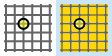

The first programming stage consists of drawing the section to be machined. The window provides the commands typical of CAD software: draw line, draw arc, snap, move, etc.
The software is designed to create the section as a quick sketch, which is then modified entity by entity using the appropriate commands. Drawings in .dxf format generated by external CAD software can also be imported at any time.
Basic procedure
Press the New machining operation.
Make sure the Connected segments function is enabled.
Enable the Line.
Click repeatedly in the work area to draw the section.
When finished, press the Line command to disable it.
Then select each entity individually and check or change its parameters.
Top bar
This bar is located at the top of the interface and allows users to select one of the following modes:
Line drawing command Enables/disables the line drawing command. When enabled, it creates a new line starting from the end point of the last entity entered, if available; otherwise, the line is generated at the selected point.
Arc drawing command Enables/disables the arc drawing command. When enabled, it creates a new arc starting from the end point of the last entity entered, if available; otherwise, the arc is generated from the selected point.
Move selected segments After selecting an entity, press this button to move it within the work area.
Mirror Shape After selecting an entity, use this button to flip it horizontally and/or vertically within the work area.
Fillet After enabling the function, set the parameters on the right.
Invert active selection Inverts the active selection when the button is pressed.
Delete selected segments Deletes the selected entities.
Right side bar
The right side bar displays content according to the mode selected in the top bar. The following chapters describe its properties.
Bottom bar
Import DXF file Imports a DXF file. There are no restrictions on the file format, but importing small files in R12 format is recommended.
Export DXF file Exports the drawing in DXF format.
Undo change Undoes the last command performed.
NOTE
The keyboard “Esc” key performs the same function.
Start/end snap Makes it easier to select the start or end point of an arc or line. When the cursor approaches a vertex, the nearest point is highlighted by a yellow box containing an X and the vertex coordinates.
Ortho command Enables/disables the “Ortho” command to keep segments orthogonal.
Connected Segments command Enables/disables the “Connected Segments” command. The start point of the next segment is the end point of the previous segment.

Drawing grid Enables/disables the grid in the drawing window. The grid parameters can be accessed using the settings button.
Undo Zoom Restores the previous zoom level.
Select zoom area Selects an area on which to focus the zoom.

/0.1-20250806-060204.png)
/2.1.0-20250730-095852.png)
/2.1.1_Off_On-20250730-113243.png)
/2.1.2_Off_On-20250730-113307.png)
/2.1.3_Off_On-20250730-114034.png)
/2.1.4_Off_On-20250730-114358.png)
/2.1.5_Off_On-20250730-112017.png)
/2.1.6_Off_On-20250730-114854.png)
/2.1.7_Off_On-20250730-115136.png)
/2.4.5_Off_On-20250804-064117.png)
/2.4.15-20250804-070203.png)
/2.4.17-20250804-070308.png)